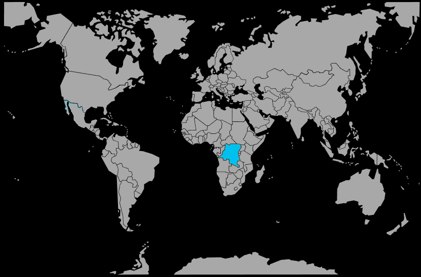

Systématique
- Ordre : Anabantiformes
- Famille : Anabantidae
- Genre : Microctenopoma
- Espèce : Microctenopoma fasciolatum
Microctenopoma fasciolatum est un petit poisson labyrinthidé africain au corps brun‑olive marqué de bandes verticales sombres, atteignant environ 8 cm à l’âge adulte.
Espèce discrète mais robuste, il apprécie les aquariums faiblement éclairés, bien plantés et riches en cachettes, où il occupe la zone médiane et supérieure.
Le ctenopoma bandé est généralement calme, mais des rivalités peuvent apparaître entre mâles, surtout en période de reproduction, d’où l’importance d’un décor très structuré.
Il cohabite avec de petits poissons paisibles occupant d’autres zones du bac, à condition d’éviter les espèces trop vives ou agressives qui le stresseraient.
Mode : constructeur de nid de bulles; le mâle bâtit un nid parmi les plantes flottantes ou sous une large feuille, où se déroule la ponte.
Après la ponte, le mâle garde le nid et les œufs; les alevins très petits nécessitent d’abord des infusoires, puis des nauplies d’artémias quand ils grandissent.
Dimorphisme sexuel : les mâles possèdent des nageoires dorsale et anale plus allongées et plus colorées, alors que les femelles restent plus petites et moins contrastées.
Espérance de vie : en aquarium, l’espèce vit environ 5 à 7 ans dans de bonnes conditions de maintenance.
Microctenopoma fasciolatum est originaire de rivières et ruisseaux d’Afrique centrale, souvent liés au bassin du Congo, avec des eaux lentes, ombragées, densément végétalisées et parfois teintées par les tanins.
Répartition
Origine naturelle :
- Bassin du Congo et rivières d’Afrique centrale voisine.
- Cours d’eau lents et zones calmes riches en végétation et en abris.
L’espèce se rencontre dans des milieux forestiers ombragés, aux eaux douces, faiblement minéralisées et bien oxygénées.
Paramètres de maintenance
Température : 24 à 28 °C.
pH : 6,5 à 7,5, de légèrement acide à neutre.
GH : 4 à 20 °dGH, avec une préférence pour une eau plutôt douce à moyennement dure.
Courant : faible, avec un bac bien couvert car l’espèce peut sauter.
Volume conseillé : à partir de 75–80 L pour un petit groupe, avec beaucoup de plantes et de cachettes.
Régime alimentaire
Régime : carnivore insectivore, se nourrissant surtout de petites proies vivantes et de micro‑invertébrés.
En aquarium, il accepte les nourritures vivantes et congelées (daphnies, artémias, vers de vase), et parfois les aliments secs de bonne qualité une fois acclimaté.
Des apports réguliers en proies vivantes favorisent les couleurs, le comportement naturel de chasse et la reproduction.